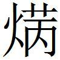

秦二
齊助楚攻秦
齊助楚攻秦，取曲沃〔一〕 。其後，秦欲伐齊〔二〕 ，齊、楚之交善〔三〕 ，惠王患之，謂張儀曰：「吾欲伐齊，齊、楚方懽，子為寡人慮之，柰何〔四〕 ？」張儀曰：「王其為臣約車并幣〔五〕 ，臣請試之〔六〕 。」
〔一〕 姚本 曲沃，晉桓叔所封也，在今弘農縣東三十五里，道北曲沃城是。戰國時秦兼有之，故齊助楚攻秦取之也。鮑本 晉桓叔所封，漢屬河東，為聞喜。此時屬秦，與上取皮氏卒同義。
〔二〕 姚本 伐齊，報曲沃也。
〔三〕 姚本 善，猶親也。
〔四〕 姚本 慮，計也。
〔五〕 鮑本 言并，則幣非一物。正曰：并，合也。
〔六〕 姚本 約，具也。幣，貨。試，猶嘗視也。鮑本 不自必之辭。
張儀南見楚王〔一〕 曰：「弊邑之王所說〔二〕 甚者，無大〔三〕 大王〔四〕 ；唯儀之所甚願為臣者，亦無大大王〔五〕 。弊邑之王所甚憎者，亦〔六〕 無先〔七〕 齊王〔八〕 ；唯儀之〔九〕 甚憎者，亦無大〔一〇〕 齊王。今齊王之罪，其於弊邑之王甚厚〔一一〕 ，弊邑欲伐之，而大國與之懽〔一二〕 ，是以弊邑之王不得事令〔一三〕 ，而儀不得為臣也。大王苟能閉關絕齊〔一四〕 ，臣請使秦王獻商於之地〔一五〕 ，方六百里。若此，齊必弱〔一六〕 ，齊弱則必為王役〔一七〕 矣。則是北弱齊，西德於秦〔一八〕 ，而私商於之地以為利也〔一九〕 ，則此一計而三利俱至。」
〔一〕 姚本 楚懷王也。
〔二〕 姚本 說，敬也。
〔三〕 鮑本 大，猶過。
〔四〕 姚本 大王，楚王也。
〔五〕 姚本 唯，獨也。願為王臣，無有與大王比者也。鮑本 唯，辭也。傳 稱往相楚是也。
〔六〕 鮑本 衍「亦」字。補曰：疑衍。札记 丕烈案：史記 無「亦」字。
〔七〕 鮑本 「先」作「大」。札记 丕烈案：「大」字當是。
〔八〕 姚本 齊威王也。鮑本 閔。
〔九〕 鮑本 「甚」上補「所」字。札记 今本「甚」上有「所」字，乃誤涉鮑也。丕烈案：史記 有。
〔一〇〕 札记 今本「大」作「先」。丕烈案：史記 四字皆作「先」，當是。與策 文皆作「大」者不同也。
〔一一〕 姚本 厚，重也。鮑本 言得罪於秦重也。
〔一二〕 姚本 懽，猶合也。
〔一三〕 姚本 令，善也。不得善事於楚王也。鮑本 事，猶聽從。
〔一四〕 姚本 苟，誠也。關，楚北方城之塞也。絕齊懽合之交也。
〔一五〕 姚本 商於，秦邑。獻，貢也。鮑本 楚記 注，在今順陽郡南鄉、丹水二縣，有商城在於中，故名。弘農商縣是也。
〔一六〕 姚本 齊無援必弱也。鮑本 失楚援故。
〔一七〕 鮑本 「役」作「沒」。補曰：役，言為楚役使。
〔一八〕 鮑本 秦因楚絕齊，得報曲沃之役，楚之惠也。
〔一九〕 姚本 曾，一作「己利」。錢、劉，一作「利」也。德，恩也。楚與齊絕，為施恩德於秦，私得秦地以為己利也。
楚王大說，宣〔一〕 言之於朝廷，曰：「不穀得商於之田，方六百里。」群臣聞見者畢賀〔二〕 ，陳軫〔三〕 後見，獨不賀。楚王曰：「不穀不煩一兵，不傷一人，而得商於之地六百里，寡人自以為智矣！諸士大夫皆賀，子獨不賀，何也？」陳軫對曰：「臣見商於之地不可得，而患必至也，故不敢妄賀〔四〕 。」王曰：「何也？」對曰：「夫秦所以重王者，以王有齊也。今地未可得而齊先絕，是楚孤也〔五〕 ，秦又〔六〕 何重孤國？且先出地絕齊，秦計必弗為也。先絕齊後責地，且必受欺於張儀〔七〕 。受欺於張儀，王必惋之〔八〕 。是西生秦患，北絕齊交，則兩國〔九〕 兵必至矣。」楚王不聽，曰：「吾事善矣！子其弭口無言〔一〇〕 ，以待吾事〔一一〕 。」楚王使人絕齊，使者未來〔一二〕 ，又重絕之。
〔一〕 姚本 宣，偏也。
〔二〕 姚本 畢，盡。鮑本 「田」作「地」。
〔三〕 姚本 軫仕楚，為楚懷王臣。鮑本 時去秦在楚。
〔四〕 姚本 妄，猶空也。
〔五〕 鮑本 無援故。
〔六〕 姚本 曾、錢、劉「夫秦有」。
〔七〕 姚本 言張儀必欺王也。鮑本 言儀必背約。
〔八〕 鮑本 惋，猶恨。
〔九〕 姚本 兩國，秦與齊也。
〔一〇〕 姚本 弭，止。鮑本 集韻 ，彌，止也，通作「弭」。
〔一一〕 鮑本 軫之策此，可謂明矣，而懷王不聽，愚而好自用者也。其死秦，宜哉！
〔一二〕 姚本 來，猶還也。
張儀反〔一〕 ，秦使人使齊，齊、秦之交陰合〔二〕 。楚因使一將軍受地於秦。張儀至〔三〕 ，稱病不朝。楚王曰：「張子以寡人不絕齊乎？」乃使勇士往詈齊王〔四〕 。張儀知楚絕齊也，乃出見使者曰：「從某至某，廣從〔五〕 六里。」使者曰：「臣聞六百里，不聞六里。」儀曰：「儀固以小人〔六〕 ，安得六百里？」使者反報楚王，楚王大怒，欲興師伐秦。陳軫曰：「臣可以言乎〔七〕 ？」王曰：「可矣。」軫曰：「伐秦非計也，王不如因而賂之一名都〔八〕 ，與之伐齊〔九〕 ，是我亡於秦而取償於齊也〔一〇〕 。楚國不尚全事。〔一一〕 王今已絕齊，而責欺於秦，是吾合齊、秦之交也，固〔一二〕 必大傷〔一三〕 。」
〔一〕 姚本 反，還也。鮑本 絕句。
〔二〕 姚本 陰，私也。
〔三〕 鮑本 前反而今至也。
〔四〕 姚本 詈，罵也。
〔五〕 姚本 錢、劉作「從」。曾一作「袤」。鮑本 橫度為廣，直為從。
〔六〕 鮑本 小人，貧寠之稱，言不能多與。
〔七〕 姚本 王初使弭口，今可以言未也。
〔八〕 姚本 名，大也。都，邑。鮑本 無「因而」二字。都邑有聞於時者。札记 丕烈案：史記 ，「不如因賂之一名都」。
〔九〕 姚本 與秦俱伐齊也。
〔一〇〕 姚本 言失邑於秦，而大得報償於齊也，故曰「是我亡於秦也」。鮑本 償，還也。言勝齊則得地，雖亡所賂，足以相償。
〔一一〕 姚本 不尚，尚也。全，空也。「事」，一云「乎」。鮑本 不尚，尚也，言無所喪。正曰：高注，「事」一云「乎」，「乎」字是。
〔一二〕 姚本 曾「固」作「國」。鮑本 「固」作「國」。補曰：史 作「國」。
〔一三〕 姚本 傷，病也。
楚王不聽〔一〕 ，遂舉兵伐秦〔二〕 。秦與齊合，韓氏從之〔三〕 。楚兵大敗於杜陵〔四〕 。故楚之土壤士民非削弱，僅〔五〕 以救亡者，計失於陳軫〔六〕 ，過〔七〕 聽於張儀〔八〕 。
〔一〕 鮑本 是亦明計也而不聽，是以知楚王之悍也。彼豈能用屈原哉！
〔二〕 鮑本 正曰：史 云「使屈句將」。
〔三〕 姚本 韓王見齊、秦合為一，故復合之也。
〔四〕 姚本 杜陵，楚邑。鮑本 屬京兆。
〔五〕 鮑本 集韻 ，僅，劣也。
〔六〕 姚本 僅，猶裁。得不滅大者，坐不從陳軫之計故也。
〔七〕 姚本 過，誤也，聽於張儀之欺六百里地。
〔八〕 鮑本 記 懷十六年有，此十二年也。補曰：張儀商於之欺，雖豎子猶能知之，以陳軫之智，固不為難也。儀之肆意而無忌者，知懷王之愚，而軫之言必不入也。不然，他日楚之請，儀將懼其甘心焉。而儀請自往，卒不能害，豈非中其所料也哉！洪邁云，賂秦攻齊，策 尤乖謬不義。齊本與國，宜割地致幣，卑詞謝罪，復求其援，而反欲攻之，軫說謬矣。「子為」、「為臣」之「為」，「使者」、「使齊」之「使」，並去聲。
楚絕齊齊舉兵伐楚
楚絕齊，齊舉兵伐楚。陳軫謂楚王〔一〕 曰：「王不如以地東解於齊，西講〔二〕 於秦。」
〔一〕 鮑本 懷。
〔二〕 鮑本 補曰：講，當從「媾」讀，說見前。
楚王使陳軫之秦，秦王謂軫曰：「子秦人也〔一〕 ，寡人與子故也〔二〕 ，寡人不佞〔三〕 ，不能親國事也〔四〕 ，故子棄〔五〕 寡人事楚王。今齊、楚相伐〔六〕 ，或謂救之便，或謂救之不便〔七〕 ，子獨不可以忠為子主計〔八〕 ，以其餘為寡人乎〔九〕 ？」陳軫曰：「王獨不聞吳人之遊〔一〇〕 楚者乎？楚王〔一一〕 甚愛之，病，〔一二〕 故使人問之〔一三〕 ，曰〔一四〕 ：『誠病乎？意亦思乎？〔一五〕 』左右曰：『臣不知〔一六〕 其思與不思，誠思則將吳吟。〔一七〕 』今軫將為王吳吟〔一八〕 。王不聞夫管與之說乎〔一九〕 ？有兩虎諍〔二〇〕 人而鬥者〔二一〕 ，管莊子 將刺之〔二二〕 ，管與止之曰：『虎者，戾蟲〔二三〕 ；人者，甘餌也〔二四〕 。今兩虎諍人而鬥，小者必死，大者必傷。子待傷虎而刺之，則是一舉而兼〔二五〕 兩虎也。無刺一虎之勞，而有刺兩虎之名〔二六〕 。』齊、楚今戰，戰必敗〔二七〕 。敗〔二八〕 ，王起兵救之，有救齊之利，而無伐楚之害〔二九〕 。計聽知覆逆者〔三〇〕 ，唯王可也。計者，事之本也；聽者，存亡之機〔三一〕 。計失而聽過，能有國者寡也〔三二〕 。故曰：『計有一二者難悖也〔三三〕 ，聽無失本末者難惑〔三四〕 。』」〔三五〕
〔一〕 姚本 軫先仕於秦，故言秦人也。
〔二〕 姚本 故，舊。
〔三〕 鮑本 佞，高才也。
〔四〕 姚本 親，猶知也。鮑本 弟親治國。
〔五〕 姚本 棄，去也。
〔六〕 鮑本 軫傳 言韓、魏。
〔七〕 姚本 便，利也。
〔八〕 鮑本 主，懷王。
〔九〕 姚本 以餘計為寡人計也。
〔一〇〕 姚本 遊，仕也。
〔一一〕 鮑本 楚先王。
〔一二〕 鮑本 吳人。
〔一三〕 鮑本 楚王使問。
〔一四〕 鮑本 使者還，主問之。
〔一五〕 姚本 思，思吳乎？
〔一六〕 鮑本 「不」作「又」。注家說「有」為「又」，則「又」亦「有」也。此言有以知之。正曰：劉辰翁云，「又知」猶「安知」。愚謂，終缺「安」字。按姚本作「不知」，是。
〔一七〕 姚本 吟，歌吟也。鮑本 作吳人呻吟。
〔一八〕 鮑本 言不忘秦。
〔一九〕 姚本 曾「管」作「卞」。管，姓也。說，言也。鮑本 軫傳 作「館豎子」。
〔二〇〕 姚本 一作「爭」。鮑本 「諍」作「爭」。補曰：字與「爭」通，下同。札记 丕烈案：史記 作「爭」。
〔二一〕 鮑本 無「者」字。
〔二二〕 鮑本 傳 「管」作「卞」。刺，有傷也。補曰：索隱 引策 作「館」。館，謂逆旅舍，其人字莊子 。札记 丕烈案：今史記 作「辨」。索隱 又云，或作「卞」。吳氏所引索隱 ，困學紀聞 引同。今王震澤本如此，與單本不同，單本不引戰國策 正文，即作「館莊子 」。此文下「管與止之」，史記 作「館豎子止之」。當依單本為是。乃史記 作「館」，策 文作「管」也。
〔二三〕 姚本 戾，貪也。鮑本 戾，猶暴。
〔二四〕 鮑本 無「也」字。以餅餌喻之。
〔二五〕 姚本 兼，得也。
〔二六〕 姚本 刺，殺也。
〔二七〕 鮑本 必有一敗。
〔二八〕 姚本 錢、劉，一無下「敗」字。
〔二九〕 姚本 害，危也。鮑本 今詳秦王言「為子主計」，則以齊、楚正相伐故也。今軫言「無伐楚」，亦并以忠為主也。
〔三〇〕 鮑本 能計善聽，知二國之覆逆。覆逆，言不順於理。正曰：覆，謂反覆；逆，謂逆料。「覆」即下文「一二」；「逆」即下文「本末」。
〔三一〕 姚本 機，要也。鮑本 機主發矢，喻事之要也、先也。
〔三二〕 姚本 寡，少也。
〔三三〕 姚本 悖，誤也。一本無「也」字。鮑本 無「也」字。「一二」，言反覆計之。集韻 ，悖，亂也。
〔三四〕 姚本 惑，亂也。鮑本 軫傳 有。無「計聽」。補曰：蒯通說韓信曰，「聽者事之候也，計者事之機也。聽過計失而能久安者鮮矣。聽不失一二者不可亂以言，計不失本末者不可紛以辭」。
〔三五〕 鮑本 軫為是媾於秦，而勸秦收齊、楚之敝，豈所以忠為主哉？或疑史 作韓、魏者，是。考秦惠時，唯十三年，韓舉趙護帥師與魏戰，敗績。去楚絕齊時遠甚，他不見韓、魏相攻事。且策 言甚時。竊意楚已遣人解齊，軫之媾秦，欲其不助齊耳。當識其意，不可泥於辭也！
秦惠王死公孫衍欲窮張儀
秦惠王死，公孫衍〔一〕 欲窮〔二〕 張儀。李讎〔三〕 謂公孫衍曰：「不如召甘茂於魏，召公孫顯〔四〕 於韓，起〔五〕 樗里子於國。三人者，皆張儀〔六〕 之讎也〔七〕 ，公用之，則諸侯必見張儀之無秦矣！」〔八〕
〔一〕 姚本 公孫衍，魏人也，仕於秦，當六國時號曰犀首。
〔二〕 姚本 窮，困也。
〔三〕 姚本 李讎，秦人也。鮑本 秦人。正曰：李讎，據高注，此無據。
〔四〕 鮑本 秦人。
〔五〕 姚本 起，猶舉也。
〔六〕 鮑本 「儀」作「子」，下句同。
〔七〕 姚本 讎，仇也。
〔八〕 姚本 公，謂公孫衍。用此三人，則諸侯知張儀無權寵於秦（一下有「也」字）。
義渠君之魏
義渠君〔一〕 之〔二〕 魏，公孫衍謂義渠君曰：「道遠，臣不得復過矣〔三〕 ，請謁事情〔四〕 。」義渠君曰：「願聞之。」對曰：「中國無事於秦〔五〕 ，則秦且燒

獲君之國〔六〕 ；中國為有事〔七〕 於秦，則秦且輕〔八〕 使重幣，而事君之國也〔九〕 。」義渠君曰：「謹聞令〔一〇〕 。」〔一〕 姚本 義渠，西戎之國名也。鮑本 西戎也，北地郡有義渠道。
〔二〕 姚本 之，至也。
〔三〕 姚本 過，見也。鮑本 不復相過。
〔四〕 姚本 謁，告也。情，實也。言義渠君道里長遠，不能復得相（「相」一本作「數」）見也，請告事之情實。鮑本 謁，白也。情，猶實。
〔五〕 姚本 無征伐之事於秦也。
〔六〕 姚本 燒焫，猶滅壞。滅壞君國也（錢止一「滅壞」字）。鮑本 焫，亦燒也。言火其國以得其地。補曰：「焫」即「爇」。
〔七〕 鮑本 事，皆謂戰。
〔八〕 鮑本 輕，言其行疾。
〔九〕 姚本 將致重幣，求援助於義渠國也。鮑本 此事君之事。
〔一〇〕 姚本 聞，猶受也。令，教也。鮑本 令，猶命。
居無幾何，五國伐秦〔一〕 。陳軫謂秦王曰：「義渠君者〔二〕 ，蠻夷之賢君，王不如賂之以撫〔三〕 其心。」秦王曰：「善。」因以文繡千匹，好女百人，遺〔四〕 義渠君。
〔一〕 姚本 五國，齊、宋、韓、魏、趙也。鮑本 後七年，韓、趙、魏、燕、齊共攻秦。
〔二〕 鮑本 無「者」字。札记 丕烈案：史記 有。
〔三〕 姚本 撫，安也。
〔四〕 鮑本 遺，贈也。
義渠君致〔一〕 群臣而謀曰：「此乃公孫衍之所謂〔二〕 也。」因起兵襲秦，大敗秦人於李帛〔三〕 之下。〔四〕
〔一〕 鮑本 致之使至。
〔二〕 姚本 謂，猶言也。
〔三〕 姚本 李帛，秦邑。鮑本 史 張儀傳 末有此策 ，「帛」作「伯」，地缺。平原傳注，河內成皋有李城。豈秦兵與諸國遇於此而見敗邪？正曰：正義 云，懷州溫縣本李城也，李同父所封。按，趙救邯鄲時，同戰死，封其弟為李侯。意者因此號李城，事在後。且此云李帛，必非。秦既攻五國，不勝而走，秦兵不應至懷。是時諸侯連匈奴，秦恐義渠因而有變，故賂以和之。義渠之襲必次於五國之後，恐非與諸國遇時也。
〔四〕 鮑本 補曰：按史 ，犀首相魏，張儀去，犀首聞儀復相秦，害之，乃謂義渠君云云。且五國伐秦，事在惠文後七年，次年魏因儀請成于秦，仍復相秦，則此時儀未為秦相也。儀自惠文後三年出相魏，至今在魏，衍不相，則儀必不去也。故大事記 謂，伐秦之役，儀在魏，陰為秦用；而又謂衍與義渠語，其相魏之後，蓋亦不能無疑。豈儀去魏之秦，犀首知其必相而害之歟？又按，秦紀 書韓、趙、魏、燕、齊帥匈奴伐秦；年表 ，韓、魏、趙、楚、燕五國伐秦不勝；楚世家 書蘇秦約從六國共攻秦，楚懷王為從長，至函谷關，秦擊之，六國皆引歸，齊獨後。互有不同。通鑑 據年表 ，大事記 據楚世家 。按楚世家 特詳者，以從長故，當以為正。年表 諸國皆書不勝，齊獨後而不敗，故略不書歟？紀 不書楚者，豈以世家 文已明歟？修魚之戰，虜韓申差，年表 在次年，而紀 於此連書之，則紀 誠有誤也。高注五國作齊、宋、韓、魏、趙，尤誤。
醫扁鵲見秦武王
醫扁鵲〔一〕 見秦武王〔二〕 ，武王示〔三〕 之病，扁鵲請除。〔四〕 左右曰：「君之病，在耳之前，目之下，除之未必已也，將使耳不聰，目不明。」君以告扁鵲。扁鵲怒而投其石〔五〕 ：「君與知之〔六〕 者謀之，而與不知者敗之。使此〔七〕 知秦國之政也，則君一舉而亡國矣。」〔八〕
〔一〕 姚本 扁鵲，盧人也，字越人。鮑本 盧人，字越人。正曰：鮑本 高注。史 ，渤海郡鄭人，姓秦氏，名越人。徐廣云，鄭當為鄚。正義 云，又家於盧，號盧醫。按周禮·釋文 引史記 ，姓秦，名少齊，越人。今史 無「少齊」字，恐釋文 為是，彼時所見本未缺也。「越人」似非名字。
〔二〕 姚本 武王，惠王子也。
〔三〕 姚本 示，語也。
〔四〕 姚本 除，治也。鮑本 欲去其病。
〔五〕 姚本 劉本「石」下有「曰」字。投，棄也。石，砭；所以砭彈人臃腫也（「臃」曾作「癰」）。鮑本 「石」下補「曰」字。砭也，所以砭彈臃腫。正曰：此亦本高注。石針曰「砭」，所以刺病。投，棄擲也。
〔六〕 姚本 一本無「之」字。
〔七〕 鮑本 此，如此。
〔八〕 鮑本 按：扁鵲與趙簡子同時，至是百三十年矣。正曰：簡子在晉昭、頃、定公時，周景王、敬王之世也。秦武王元年當赧王五年，相去二百餘年，名字必差。
秦武王謂甘茂
秦武王謂甘茂曰：「寡人欲車通三川，以闚周室〔一〕 ，而寡人死不杇乎〔二〕 ？」甘茂對曰：「請之魏，約伐〔三〕 韓。」王令向壽〔四〕 輔〔五〕 行。
〔一〕 姚本 三川，義陽川。周室，洛邑，王城也，今河南縣也。鮑本 闚，窺同，小視也。周室，洛邑。蓋欲取之，不正言爾。言三川，知其志不止鎬京也。正曰：三川，宜陽。說見周策 。大事記 ，蓋控阨之地，故秦武云云。
〔二〕 姚本 「乎」一作「矣」。鮑本 補曰：「乎」史 作「矣」。札记 今本「杇」作「朽」。
〔三〕 札记 今本「伐」誤「代」。
〔四〕 鮑本 宣太后外族。
〔五〕 姚本 輔，副介也。鮑本 輔，猶副。
甘茂至魏，謂向壽：「子歸告王曰：『魏聽〔一〕 臣矣，然願王勿攻也。』事成，盡以為子功〔二〕 。」向壽歸以告王，王迎甘茂於息壤〔三〕 。
〔一〕 姚本 聽，從。
〔二〕 鮑本 補曰：茂欲壽告王勿攻，王必疑其故，而茂得以薦其言，故曰「事成盡以為子功」。大事記 云，壽，武王所親幸，故茂以諉之。
〔三〕 姚本 息壤，秦邑也。鮑本 山海經 ，鯀竊息壤以陻洪水；時則訓 ，於中央言息壤陻洪水之州；而柳子厚言永州有之。則息壤非一處，此秦地也。
甘茂至，王問其故〔一〕 。對曰：「宜陽，大縣也，上黨、南陽〔二〕 積之久矣〔三〕 ，名為縣，其實郡也〔四〕 。今王倍〔五〕 數險，行千里〔六〕 而攻之，難矣。臣聞張儀西并〔七〕 巴、蜀之地，北取西河之外，南取上庸〔八〕 ，天下不以為多張儀〔九〕 而賢先王〔一〇〕 。魏文侯令樂羊將，攻中山〔一一〕 ，三年而拔之，樂羊反而語功〔一二〕 ，文侯示之謗書一篋，樂羊再拜稽首曰：『此非臣之功，主君之力也。』今臣羇旅之臣也〔一三〕 ，樗里疾、公孫衍〔一四〕 二人者，挾韓而議〔一五〕 ，王必聽之，是王欺魏，而臣受公仲侈〔一六〕 之怨也。昔者曾子處費〔一七〕 ，費人有與曾子同名族〔一八〕 者而殺人，人告曾子母曰：『曾參殺人。』曾子之母曰：『吾子不殺人。』織自若〔一九〕 。有頃焉，人又曰：『曾參殺人。』其母尚織自若也。頃之，一人又告之曰：『曾參殺人〔二〇〕 。』其母懼，投杼〔二一〕 踰牆而走〔二二〕 。夫以曾參之賢，與母之信也，而三人疑之〔二三〕 ，則慈母不能信也〔二四〕 。今臣之賢不及曾子，而王之信臣又未若曾子之母也，疑臣者〔二五〕 不適〔二六〕 三人，臣恐王為〔二七〕 臣之投杼也。」王曰：「寡人不聽也〔二八〕 ，請與子盟。」於是與之盟於息壤。
〔一〕 鮑本 勿攻之故。
〔二〕 鮑本 此屬修武。
〔三〕 鮑本 二縣財賦歸之。
〔四〕 鮑本 此時韓都平陽。春秋傳 ，上大夫受郡，下大夫受縣。則郡縣之稱久矣。正曰：大事記 云，春秋 時郡屬於縣，趙簡子所謂上大夫受縣，下大夫受郡是也。戰國時縣屬於郡，所謂上郡十五縣者是也。魏惠十年後，方孝公商鞅時，并小鄉為大縣，縣一令，尚未有郡及守稱。故魏納上郡之後十餘年，秦紀 始書漢中郡。或者山東諸侯先變古制而秦效之歟？
〔五〕 鮑本 倍，背同。
〔六〕 鮑本 「行」下有「數」字。補曰：一本「行千里」。札记 丕烈案：史記 、新序 皆無。
〔七〕 鮑本 并，猶兼。
〔八〕 姚本 上庸，楚邑，今漢中東縣也。鮑本 屬漢中。補曰：大事記 云，本庸國，今房州竹山縣，漢中要地也。
〔九〕 姚本 錢、劉本作「不以多張子」。鮑本 衍「為」字。補曰：姚氏云，錢、劉本無此字。札记 丕烈案：史記 無。
〔一〇〕 姚本 先王，謂惠王也。鮑本 惠文。
〔一一〕 姚本 中山，狄都，今盧奴中山也。鮑本 冀州國。後志 云，一名中人亭。補曰：見中山策 。
〔一二〕 姚本 語，言也。拔（一本拔上有「言」字）中山之功也。
〔一三〕 姚本 甘茂，本齊人，故曰羇旅也。
〔一四〕 鮑本 補曰：「衍」，史 並作「奭」，新序 作「公孫子」，謂皆秦諸公子。札记 丕烈案：索隱 引此正作「衍」，但此與犀首別一人，即公孫郝、公孫赫也，亦云公孫顯。疑「衍」字有誤。
〔一五〕 鮑本 媒孽之也。
〔一六〕 鮑本 「侈」作「朋」。朋，公仲名。此書後或名朋，或名侈，「朋」、「侈」字近，故誤。史 並作「侈」，然韓策 言「公仲侈」，又言「韓侈」，為兩人。今定公仲名，明別韓侈也。正曰：史田齊世家 「韓馮」，徐廣云，即「公仲侈」。大事記 取「韓」，又有「韓明」、「韓侈」。「馮」、「朋」音混，而「侈」、「明」、「朋」字訛故也。且當各存舊文，辯見各條。札记 丕烈案：甘茂傳 與此同，作「侈」。徐廣曰，一作「馮」。
〔一七〕 姚本 費，邑名也。鮑本 魯邑，屬東海。
〔一八〕 姚本 名，字。族，姓。
〔一九〕 姚本 若，如故也。
〔二〇〕 姚本 一本無以上十九字。
〔二一〕 鮑本 機之持緯者。
〔二二〕 姚本 踰牆逃走也。
〔二三〕 姚本 疑，猶惑也。鮑本 使其母疑。
〔二四〕 姚本 信，猶保也。
〔二五〕 鮑本 疑之於王。
〔二六〕 姚本 適，音翅。鮑本 「適」，「啻」同。
〔二七〕 姚本 一本「為」上有「之」字。
〔二八〕 姚本 聽，受也。
果攻宜陽，五月而不能拔也。樗里疾、公孫衍二人在〔一〕 ，爭之王，王將聽之，召甘茂而告之。甘茂對曰：「息壤在彼。」王曰：「有之。」因悉起兵，復使甘茂攻之，遂拔宜陽。〔二〕
〔一〕 姚本 「在」，續：新序 作「讒」。鮑本 言在中也。
〔二〕 鮑本 在三年，茂傳有。
宜陽之役馮章謂秦王
宜陽之役〔一〕 ，馮章〔二〕 謂秦王曰：「不拔宜陽，韓、楚乘吾弊〔三〕 ，國必危矣！不如許楚漢中以懽之〔四〕 。楚懽而不進，韓必孤，無奈秦何矣〔五〕 ！」王曰：「善。」果使馮章許楚漢中，而拔宜陽〔六〕 。楚王〔七〕 以其言責漢中於馮章，馮章謂秦王曰：「王遂亡臣〔八〕 ，固〔九〕 謂楚王曰：『寡人固無地而許楚王。』」〔一〇〕
〔一〕 姚本 役，事也。鮑本 役，猶戍役。
〔二〕 鮑本 秦人。
〔三〕 姚本 弊，極也。
〔四〕 姚本 與楚漢中以喜之也。鮑本 使楚說也。
〔五〕 姚本 韓失楚援，故孤，無如秦何。
〔六〕 姚本 宜陽，韓邑也。
〔七〕 鮑本 懷。
〔八〕 鮑本 詐為逐之。札记 今本「遂」誤「逐」。
〔九〕 鮑本 「固」作「因」。札记 今本「固」作「因」。
〔一〇〕 鮑本 彪謂：此策 可以無出地矣，如後不可為約何！正曰：戰國變詐多此類，豈暇慮後邪！懷王親受商於之欺而猶不悟，昏於貪故也。
甘茂攻宜陽
甘茂攻宜陽，三鼓〔一〕 之而卒不上〔二〕 。秦之右將有尉〔三〕 對曰：「公不論兵〔四〕 ，必大困。」甘茂曰：「我羇旅而得相秦者，我以宜陽餌王〔五〕 。今攻宜陽而不拔，公孫衍〔六〕 、樗里疾挫〔七〕 我於內，而公中〔八〕 以韓窮我於外，是無伐之日已〔九〕 ！請明日鼓之而不可下，因以宜陽之郭為墓〔一〇〕 。」於是出私〔一一〕 金以益〔一二〕 公賞。明日鼓之，宜陽拔〔一三〕 。
〔一〕 鮑本 鼓以進軍。
〔二〕 姚本 卒，士也。士不上攻也。鮑本 上，猶前。
〔三〕 鮑本 軍尉。
〔四〕 鮑本 言不以兵法治士。
〔五〕 姚本 餌，猶喜也。鮑本 以釣喻也
〔六〕 鮑本 補曰：「衍」，史 作「奭」，下章同。札记 丕烈案：史記 無此文，吳以意言之耳。已見上，不當更出也。
〔七〕 姚本 挫，猶毀也。鮑本 挫，摧也。
〔八〕 姚本 公中，韓侈也。鮑本 「中」作「仲」。
〔九〕 鮑本 戰功曰「伐」，言後不復立功。正曰：一本作「無茂」，是，蓋字訛。
〔一〇〕 姚本 墓，葬也。鮑本 示必死也。
〔一一〕 札记 今本「私」誤「利」。
〔一二〕 姚本 益，助也。
〔一三〕 姚本 拔，得也。鮑本 「宜」上有「而」字。補曰：一本「鼓之，宜陽拔」。
宜陽未得
宜陽未得〔一〕 ，秦死傷者眾，甘茂欲息兵〔二〕 。左成謂甘茂曰：「公內攻於樗里疾、公孫衍〔三〕 ，而外與韓侈〔四〕 為怨，今公用兵無功，公必窮矣。公不如進兵攻宜陽，宜陽拔，則公之功多矣〔五〕 。是樗里疾、公孫衍無事也〔六〕 ，秦眾盡怨之深矣〔七〕 。」
〔一〕 姚本 「得」一本作「拔」。宜陽，韓邑，韓武子所都也。
〔二〕 姚本 甘茂，秦將也。息，休也。
〔三〕 姚本 惡甘茂譖毀之於內，故曰內攻於疾、衍（一本下有「也」字）。鮑本 二人毀之，如攻國然。
〔四〕 姚本 韓侈，韓相。鮑本 「侈」作「明」。
〔五〕 姚本 戰功曰多也。
〔六〕 姚本 無事，樗里疾、公孫衍無以復攻毀甘茂之事也。鮑本 不得事權。
〔七〕 姚本 秦死傷眾，盡怨樗里疾、公孫衍之造謀伐宜陽，怨深之重也。鮑本 謂死傷多，使茂久攻，二人持之故也。
宜陽之役楚畔秦而合於韓
宜陽之役，楚畔秦而合於韓。秦王〔一〕 懼。甘茂曰：「楚雖合韓，不為韓氏先戰〔二〕 ；韓亦恐戰而楚有變其後〔三〕 。韓、楚必相御也〔四〕 。楚言與韓，而不餘怨於秦〔五〕 ，臣是以知其御也。〔六〕 」
〔一〕 姚本 秦武王也。
〔二〕 姚本 言楚不能為韓氏先與秦戰也。
〔三〕 姚本 恐楚作變難，伐其後也。鮑本 變，背約也。楚時助韓，兵在韓後。正曰：言其後有變也。
〔四〕 姚本 御，猶相瞰望也（「瞰」，錢、劉作「詹」）。鮑本 御，猶制也。二國雖合猶相疑，故自相制。
〔五〕 鮑本 楚之與韓，有言而已；而其於秦，不見多怨。正曰：聲言與韓，而不遺怨於秦。
〔六〕 姚本 楚雖與韓合，不有餘怨於秦，無怨亦可復合也，故曰：「以是知其相御」。
秦王謂甘茂
秦王謂甘茂曰：「楚客來使者多健〔一〕 ，與寡人爭辭，寡人數窮焉〔二〕 ，為之奈何？」甘茂對曰：「王勿患也〔三〕 ！其健者來使者〔四〕 ，則王勿聽〔五〕 其事；其需〔六〕 弱者來使，則王必聽之。然則需弱者用，而健者不用矣！王因而制之〔七〕 。」
〔一〕 姚本 健者，強也。鮑本 言其強辯。
〔二〕 鮑本 辭屈也。
〔三〕 姚本 患，憂也。
〔四〕 鮑本 補曰：「者」字疑衍。札记 丕烈案：據下句「使」下無「者」字也。
〔五〕 姚本 聽，從也，受也。
〔六〕 鮑本 集韻 ，需，音儒，韋柔滑貌。補曰：「需」即「濡」。
〔七〕 姚本 制，御也。鮑本 弱者易制，因可制。
甘茂亡秦且之齊
甘茂亡秦，且之齊〔一〕 ，出關遇蘇子〔二〕 ，曰：「君聞夫江上之處女乎〔三〕 ？」蘇子曰：「不聞。」曰：「夫江上之處女，有家貧而無燭者，處女相與語，欲去之〔四〕 。家貧無燭者將去矣，謂處女曰：『妾以無燭，故常先至，掃室布席，何愛〔五〕 餘明之照四壁者？幸以賜妾，何妨於處女？妾自以有益於處女，何為去我？』處女相語以為然而留之。今臣不肖，棄逐於秦而出關〔六〕 ，願為足下掃室布席，幸無我逐也。」蘇子曰：「善。請重公於齊〔七〕 。」
〔一〕 姚本 且，將也。鮑本 茂傳 ，昭元年，擊魏皮氏，未拔，去。
〔二〕 姚本 遇，見也。蘇子，蘇代也。鮑本 代也。代傳 ，侍燕太子質於齊，將適秦。
〔三〕 鮑本 女在室者。
〔四〕 姚本 去，猶遣之也，遣無燭者。鮑本 遣之使去。
〔五〕 鮑本 「愛」下有「於」字。
〔六〕 姚本 甘茂言，我不肖，為秦所棄逐也。
〔七〕 姚本 重，尊也。言將使齊尊重公。
乃西說秦王曰：「甘茂，賢人，非恒〔一〕 士也。其居秦累世重矣〔二〕 ，自殽塞、谿谷，地形險易盡知之〔三〕 。彼若以齊約韓、魏，反以謀秦，是非秦之利也〔四〕 。」秦王曰：「然則奈何？」蘇代曰：「不如重其贄〔五〕 ，厚其祿以迎之。彼來則置之槐谷〔六〕 ，終身勿出〔七〕 ，天下何從圖秦。」秦王曰：「善」。與之上卿，以相迎之〔八〕 齊。
〔一〕 鮑本 恒，常也。
〔二〕 鮑本 茂事惠、武、昭三王。
〔三〕 姚本 言周、秦之地悉知也。
〔四〕 姚本 約，結也。以齊之強，合韓、魏，還以圖秦，能傾之，故曰「非秦之利也」。
〔五〕 姚本 劉作「重贄」。鮑本 集韻 ，「贄」與「摯」通，握持也。言多持物往遺之。
〔六〕 姚本續 ：後語 槐谷注，槐里之谷，今京兆始平之地。或作鬼谷，大非。鮑本 扶風有槐，史 云鬼谷，注，在陽城。補曰：按史 ，谿谷、槐谷並作鬼谷。故前則徐注在陽城，后則劉伯莊云在關內雲陽，皆不明。札记 吳氏補曰，按史 ，谿谷、槐谷並作鬼谷。丕烈案：「槐」、「鬼」者，聲之轉也。此必在關內。徐廣注史記 以陽城之鬼谷說之，自誤。而後語 注因云「或作鬼谷，大非」，亦未然。
〔七〕 鮑本 代知茂必留齊，故言此爾，不為茂游說也。正曰：代以此言激秦王，與之上卿，以相迎之，使齊亦重茂，豈非游說也？
〔八〕 姚本 錢一作「相印迎之」。鮑本 迎之於齊。
甘茂辭不往，蘇秦〔一〕 偽謂〔二〕 王〔三〕 曰：「甘茂，賢人也。今秦與之上卿，以相迎之〔四〕 ，茂德王之賜，故不往，願為王臣。今王何以禮之？王若不留，必不德王〔五〕 。彼以甘茂之賢，得擅用強秦之眾，則難圖也！」齊王曰：「善。」賜之上卿，命〔六〕 而處〔七〕 之。〔八〕
〔一〕 姚本 「秦」一作「代」。鮑本 「秦」作「子」。補曰：姚氏云，一作「代」。按，史 同。
〔二〕 姚本 一作「偽謂齊湣王曰」。鮑本 「謂」作「為」。補曰：「偽為」二字，疑是「為謂」，蓋上卿之事誠有，何得言「偽」？「為」，一本作「謂」。
〔三〕 鮑本 「王」上補「齊」字。王，閔。札记 丕烈案：史記 作「蘇代謂齊湣王曰」。
〔四〕 姚本 劉作「以相印迎之齊」。
〔五〕 姚本 德，恩也。
〔六〕 鮑本 命，猶入命之「命」。茂傳有。
〔七〕 姚本 處，居也。續：後語 ，「而厚處之」。
〔八〕 鮑本 補曰：列女傳 ，齊女徐吾與鄰婦合燭夜績，辭亦相類。史 通謂，游士假設之辭，遽以名字加之者。
甘茂相秦〔校一〕
〔校一〕 此篇姚本與甘茂亡秦且之齊 連篇，鮑本另列一篇，據文義，從鮑本。
甘茂相秦。秦王愛公孫衍，與之間有所立〔一〕 ，因自謂之曰：「寡人且相子〔二〕 。」甘茂之吏道而聞之〔三〕 ，以告甘茂。甘茂因入見王曰：「王得賢相，敢再拜賀。」王曰：「寡人託國於子，焉更得賢相？」對曰：「王且相犀首〔四〕 。」王曰：「子焉聞之？」對曰：「犀首告〔五〕 臣。」王怒於犀首之泄也，乃逐〔六〕 之〔七〕 。
〔一〕 鮑本 請間之。間，暇隙也。因暇與語，將置相也。
〔二〕 姚本 子，公孫衍也。
〔三〕 姚本 劉無「道而」二字。鮑本 聞之於道。補曰：姚注，劉本無「道而」二字。按韓非子 「道而」作「道穴」，云，秦王欲將犀首，樗里疾恐代之將也，鑿穴於王之所常隱語者，王果與犀首計之，境內盡知之，蓋樗里疾道穴聽之矣。札记 丕烈案：韓子 在外儲說右上 ，事與策 同。其樗里疾事，以「一曰」為別，吳合為一事者誤。
〔四〕 姚本 犀首，公孫衍也。
〔五〕 姚本 告，語也。
〔六〕 姚本 言甘茂知之，且不欲使公孫衍得相而分（一本無「而」字）其寵也，故言「犀首告臣」，欲王逐之也。鮑本 補「逐」，逐衍也。曰告人足矣，不必告己。補曰：「告人」之云，機更深險。
〔七〕 鮑本 「逐」下無「之」字。札记 丕烈案：韓子 有。
甘茂約秦魏而攻楚
甘茂約秦、魏而攻楚。楚之相秦者屈蓋〔一〕 ，為楚和於秦，秦啟關而聽楚使。甘茂謂秦王曰：「怵〔二〕 於楚而不使魏制〔三〕 和，楚必曰『秦鬻〔四〕 魏〔五〕 』。不悅而合於楚，楚、魏為一，國恐傷〔六〕 矣。王不如使魏制和，魏制和必悅〔七〕 。王不惡於魏，則寄地〔八〕 必多矣。」
〔一〕 姚本 屈蓋，楚臣也，楚仕於秦，使秦相之也。鮑本 凡屈皆楚人。楚任之於秦，使為秦相。
〔二〕 鮑本 「怵」作「訹」。補曰：策 「訹」、「怵」字通。訹，誘也；若怵，則驚耳。
〔三〕 鮑本 制，謂主之。
〔四〕 鮑本 以鬻魏之言告魏。鬻，賣也，如賣友云。言始約而終背之。
〔五〕 鮑本 「魏」下補「魏」字。補曰：恐缺一「魏」字。
〔六〕 姚本 傷，害也。
〔七〕 鮑本 絕句。
〔八〕 鮑本 言魏且割地與秦。時地未入，故言「寄」。
陘山之事
陘山之事〔一〕 ，趙且與秦伐齊。齊懼，令田章以陽武合於趙，〔二〕 而以順子為質〔三〕 。趙王〔四〕 喜，乃案兵告於秦曰：「齊以陽武賜弊邑而納順子，欲以解伐〔五〕 。敢告下吏〔六〕 。」
〔一〕 姚本 陘山，蓋趙并陘塞也。事，役也。鮑本 穰侯傳 ，魏背秦與齊從親，秦使穰侯攻趙、韓、魏於華陽下，且益趙以兵伐齊，則此役也。陘山在密。後志 注云，史記 ，秦破魏華陽，地亦在縣。則此策 書陘山，史 書華陽，一役也。事在三十四年。正曰：大事記 ，華陽之役，秦救韓而擊趙、魏。年表 、列傳 或云得三晉將，或云攻趙、韓、魏，皆記者之誤。按大事記 ，赧王四十一年，魏背秦與齊從親，秦魏冉伐魏，拔四城。明年，趙、魏伐韓，秦魏冉救韓，敗趙、魏，且與趙觀津，益趙以兵伐齊。補曰：陘山見前。大事記 ，華陽，亭名，在密陽。
〔二〕 姚本 陽武，齊邑也。合，和也。鮑本 屬河南，此時屬齊。正曰：此指開封。陽武非齊地，當考。
〔三〕 姚本 順子，齊公子。質，保也。
〔四〕 鮑本 惠文。
〔五〕 姚本 解趙，使不與秦俱伐齊。
〔六〕 姚本 下吏，秦吏。鮑本 不斥王，故言告吏。
秦王使公子他之趙，謂趙王曰：「齊與大國救魏而倍約〔一〕 ，不可信恃，大國不義〔二〕 ，以告弊邑〔三〕 ，而賜之二社〔四〕 之地，以奉祭祀。今又〔五〕 案兵，且欲合齊而受其地〔六〕 ，非使臣之所知也。請益甲四萬，大國裁之。」
〔一〕 鮑本 齊背二國。
〔二〕 姚本 「不」一作「弗」。錢、劉一作「不以為義」。續：若下注作「弗」，則上當作「弗義」。大國，趙也。弗義，不以為義也。鮑本 趙以齊倍之為不義。
〔三〕 姚本 弊邑，秦自謂也。鮑本 告以伐齊。
〔四〕 鮑本 邑皆有社。二社，二邑也。正曰：未詳戰國之制。
〔五〕 姚本 劉、錢「又」作「有」。續：古人「有」多作「又」。
〔六〕 姚本 地，陽武也。
蘇代為齊獻書穰侯〔一〕 曰：「臣聞往來之者言〔二〕 曰：『秦且益趙甲四萬人以伐齊。』臣竊必之弊邑之王〔三〕 曰：『秦王明而熟於計，穰侯智而習於事，必不益趙甲四萬人以伐齊。』是何也？夫三晉相結，秦之深〔四〕 讎也。三晉百背秦，百欺秦，不為不信，不為無行。今破齊以肥趙，趙〔五〕 ，秦之深讎〔六〕 ，不利於秦。一也。秦之謀者必曰：『破齊弊晉〔七〕 ，而後制晉、楚之勝〔八〕 。』夫齊，罷〔九〕 國也，以天下擊之，譬猶以千鈞之弩〔一〇〕 潰癰也。秦王安能制晉、楚哉〔一一〕 ！二也。秦少出兵，則晉、楚不信〔一二〕 ；多出兵，則晉、楚為制於秦。齊恐，則必〔一三〕 不走於秦且走晉、楚〔一四〕 。三也。齊割地以實晉、楚，則晉、楚安。齊舉兵而為之頓劍〔一五〕 ，則秦反受兵。四也。是晉、楚以秦破齊，〔一六〕 以齊破秦〔一七〕 ，何晉、楚之智而齊、秦之愚〔一八〕 ！五也。秦得安邑〔一九〕 ，善齊以安之，亦必無患矣。秦有安邑，則韓、魏必無上黨哉〔二〇〕 。夫取三晉之腸胃〔二一〕 與出兵而懼其不反也，孰利？故臣竊必之〔二二〕 弊邑之王曰：『秦王明而熟於計，穰侯智而習於事，必不益趙甲四萬人以伐齊矣。』」〔二三〕
〔一〕 姚本 蘇代，蘇秦弟。穰侯，秦相也。
〔二〕 姚本 錢、劉一作「往來之言者」。鮑本 「之者」作「者之」。補曰：宜作「者之」。史 無「之」字。
〔三〕 鮑本 必者，意其然。王，襄王。
〔四〕 姚本 深，重也。
〔五〕 姚本 史記 有「趙趙」二字。曾、劉無。
〔六〕 鮑本 此二十七年敗趙，取伐光狼。
〔七〕 鮑本 此晉，趙也。以趙破齊，齊破，趙亦敝。
〔八〕 鮑本 二國破敝，秦無後慮，可以南制楚。
〔九〕 鮑本 罷，疲同。
〔一〇〕 姚本 錢、劉「弩」下有「射」字。鮑本 補曰：史 作「決潰癰」。
〔一一〕 鮑本 天能制人，必其威武足以屈人。今攻罷國，勝之，非武也，安能制人。
〔一二〕 鮑本 不信其伐齊。
〔一三〕 鮑本 無「必」字。
〔一四〕 鮑本 兵多，則非獨齊見制，懼晉、楚亦見制。齊畏秦，故不趨秦；而與晉、楚同患，故趨晉、楚。
〔一五〕 鮑本 二國惡秦，而齊先伐，故既合，則齊為二國出兵。頓，下也。此以小言之。
〔一六〕 鮑本 「破」作「伐」。晉亦趙也，初與秦伐齊。
〔一七〕 鮑本 為之頓劍是也。
〔一八〕 姚本 齊、秦為晉、楚所帥，故謂之愚也。
〔一九〕 鮑本 此攻華陽時得之。安邑，魏地，亦屬韓，猶上黨兩屬也。白起傳 ，取韓安邑。正曰：按起傳 ，取韓安邑以東到乾河，在取魏城六十邑前一年，昭王之十七年也。索隱 云，韓故地。又魏以安邑入秦，在昭王二十一年。恐非此時得之。
〔二〇〕 姚本 「哉」，劉作「矣」。秦將取之，故曰「無上黨哉」也。鮑本 言可取。
〔二一〕 姚本 腸胃，喻腹心也。鮑本 安邑、上黨如之。
〔二二〕 姚本 曾、集「之」上有「為」字。
〔二三〕 鮑本 穰侯傳 有。補曰：於是穰侯不行，引兵而歸。「為齊」、「為之」之「為」，「使臣」之「使」，兩「走」字，並去聲。
秦宣太后愛魏醜夫
秦宣太后〔一〕 愛魏醜夫〔二〕 。太后病將死，出令曰：「為我葬，必以魏子為殉〔三〕 。」魏子患之。庸芮〔四〕 為〔五〕 魏子說太后〔六〕 曰：「以死者為有知乎？」太后曰：「無知也。」曰：「若太后之神靈，明知死者之無知矣，何為空以生所愛，葬於無知之死人哉！若死者有知，先王積怒〔七〕 之日久矣，太后救過不贍，何暇乃〔八〕 私魏醜夫乎？」太后曰：「善。」乃止〔九〕 。
〔一〕 姚本 惠王之后，昭襄王母，故曰太后也。
〔二〕 鮑本 魏人，仕秦。
〔三〕 姚本 殉，殺人以葬。鮑本 以人從葬曰「殉」。
〔四〕 姚本 庸芮，秦臣也。鮑本 秦人。正曰：高注「臣」。
〔五〕 鮑本 補曰：「為魏」之「為」，去聲。
〔六〕 姚本續 ：十二國史 作「虞其為醜夫說太后」。
〔七〕 姚本 怒，詬。
〔八〕 姚本 「乃」，曾、錢、劉作「及」。鮑本 補曰：元無「乃」字。
〔九〕 姚本 止，不以魏醜夫為殉者也。鮑本 后死在四十二年。
本章完!